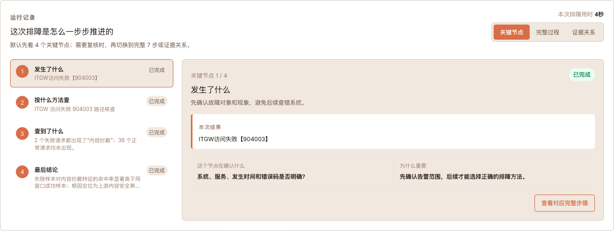
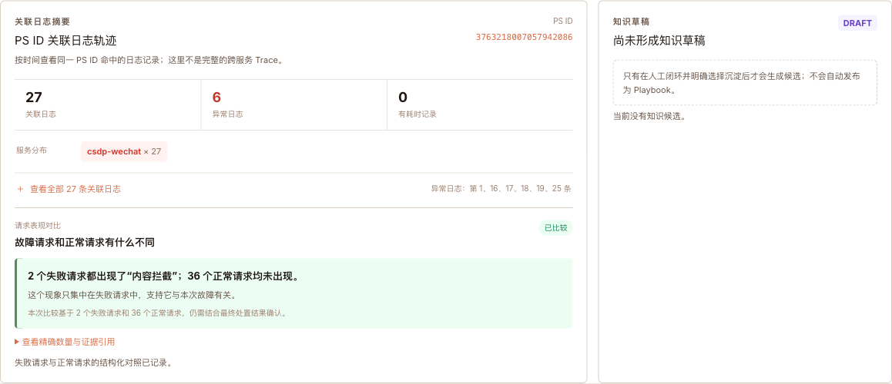

三个问题，用三种方式支持
三个问题是希望给人带来的结果；三种方式是平台手段。它们不是一一对应，而是共同支持二线、三线和重大故障团队。
当前证据：ITGW 904003 真源竖线已跑通。
当前边界：机制已具备，组织复用效果仍待统计。
当前边界：通用自主规划尚未达到投产证明。
再用一个真实告警证明方法可以运行
本案例证明平台能把一条线上告警变成可追溯、可复核的排障单；它还不能单独证明二线、三线和重大故障三项组织效果已经全面实现。
客服数字化（WECHAT）· 真实事件
ITGW访问失败【904003】
时间：2026-08-07 17:12
集群线索：sz3-s-k8s
服务：csdp-wechat
告警数量：6
平台帮助团队回答四个问题
- 这是什么系统、哪个服务、什么时间发生的问题？
- 应该按照哪种已审核的方法调查？
- 异常是否只集中在失败请求，而正常请求没有？
- 当前能形成什么结论，什么时候必须停止并转人工？
3 次真实 Guance 只读查询
约 4 秒本次系统调查记录
2 与 36失败请求与正常请求对照
0 次错误码命中路径模型调用
别人怎么接入，又怎么开始排障
接入由平台管理员和系统负责人完成一次性准备；开发和值班人员日常只需要从告警创建排障单，不必自己编写 DQL。
接入保障
三类角色把系统准备好
- 平台管理员：在“取证接入 → 数据源联调”配置并验证 Guance 连接，这一步按数据源配置，不要求每个系统重复配置。
- 系统负责人：在“系统与模块”登记系统、服务和环境，在“查询规则”维护失败、关联日志和正常对照的只读查询。
- 审核负责人：把错误码或场景绑定到已审核规则，完成只读试跑和版本启用；规则缺失时系统会停止，不会猜。
日常使用
开发从一条告警开始
- 进入“智能排障 → 排障工作台”，点击创建排障单。
- 填写系统、服务、告警时间、错误码和故障现象。
- 系统自动选择已审核方法并执行只读取证。
- 在详情页先看结论，再按需查看关键节点、完整过程和证据关系。
- 负责人确认或驳回结论，在外部完成生产处置并登记结果；结案后可沉淀为候选规则。
没有接入资产、审核规则或可用证据时，页面会明确显示“证据不足”或配置缺口，开发转回人工排障；不会使用 Demo、历史猜测或模型回答替代真源证据。
一条受控的证据链
每一步都有明确输入、输出和停止条件；数据不足时直接弃权，不让模型补猜。
1收到告警确认系统、服务、时间、错误码
2选排障方法冻结已审核规则和版本
3找失败请求取得真实关联 ID
4查关联日志只保留安全结构字段
5找正常请求同服务、同时间窗对照
6计算条件确定性规则，不用模型猜
7形成结论定位、弃权或转人工
真实 Demo 效果
以下均来自当前运行中的真实排障单，不使用旧原型或模拟结果。点击切换三张效果图。

先给结论、影响和责任边界；三个耗时阶段分开记录，不用不完整数据拼总时长。

默认先看四个关键节点，需要技术复核时再切换完整七步和证据关系。

2 个失败请求都出现“内容拦截”；36 个正常请求均未出现。页面明确这是 PS ID 关联日志，不冒充完整 Trace。
AI 工具怎么用
核心原则：AI 可以提建议和做解释，但真实证据与审核规则才是判断权威。
产品运行时
把 AI 放在非权威位置
- 错误码规则已命中：零模型调用，直接按审核规则取证和计算。
- 未知场景：受限 Agent 只可在白名单只读工具范围内提出调查建议；当前不宣称能自主处理任意未知问题。
- 历史案例：AI 生成排障方法草稿，必须经回放和人工审核后启用。
- 证据解释：把技术数字翻译成人话，不改写底层事实。
研发阶段
AI 加速实现，人守住边界
- Codex：代码理解、跨前后端实现、测试、浏览器验收和交付文档。
- Claude：早期架构讨论、反证和交互方案迭代。
- 人工：确认真实字段、判断阈值、审核启用和生产处置。
AI 生成内容必须经过测试、固定回放、真实只读调用和人工复核。
三个问题，必须用人的变化来验收
系统查询快不等于排障已经变快。正式效果需要记录传统人工基线，再让二线、首次接手系统的开发和重大故障团队用同类真实案例做前后对照。
| 要解决的问题 | 正式试用记录 | 成功的直接证据 |
|---|---|---|
| 二线可以开展排障 | 独立完成率、升级三线比例、首个可读结论时间 | 不依赖三线代查就能完成标准场景，或准确说明缺口和升级原因 |
| 三线快速上手 | 首次接手系统的排障时间、求助次数、关键证据完整率 | 不熟悉系统的开发能按平台路径取得正确证据并形成可复核判断 |
| 重大故障快速定位 | 问题范围收敛时间、重复查询次数、无效转派次数 | 多角色围绕同一排障单形成一致的证据范围、候选定位和责任边界 |
当前已经证明的工作方式变化
| 环节 | 传统方式 | MateClaw |
|---|---|---|
| 查询路径 | 依赖个人经验，容易查错窗口或字段 | 审核过的方法固定查询顺序与绝对时间窗 |
| 关联信息 | 手工复制 ID，多页面切换 | 第一步返回的真实 ID 自动成为后续唯一输入 |
| 异常判断 | 看到一条错误日志后凭经验推断 | 失败与正常请求同窗对照，再算确定性条件 |
| 过程复核 | 聊天、截图、链接分散 | 关键节点、七阶段和证据关系集中在一张单 |
| 经验沉淀 | 口口相传 | 结案生成候选，回放和审核后才能复用 |
本次真实案例的系统调查约 4 秒，只证明一条方法在真实数据上可以运行；不能替代二线独立完成率、三线新人上手时间和重大故障收敛时间的验证。
完成度与投产边界
作品诚实展示已经证明的能力，也明确还没有证明什么。
已完成
一条真实竖线
- 真实 Guance 三次只读查询。
- 失败请求与正常请求对照。
- 确定性判断、双视图和证据反查。
- ITGW 904003 真实案例端到端跑通。
投产与效果验证前
把单例变成可运营能力
- owner 核对各系统 measurement 与字段。
- 冻结至少 20 个真实可执行目标；当前 0/20。
- 完成 owner acceptance 和历史样本影子运行。
- 让二线和首次接手系统的开发真实试用，记录人工基线与平台结果。
- 补齐 RBAC、审计、运行手册和回滚演练。
让更多人能排障，让重大问题更快收敛
打开本地真实排障单，查看完整证据与判断过程。